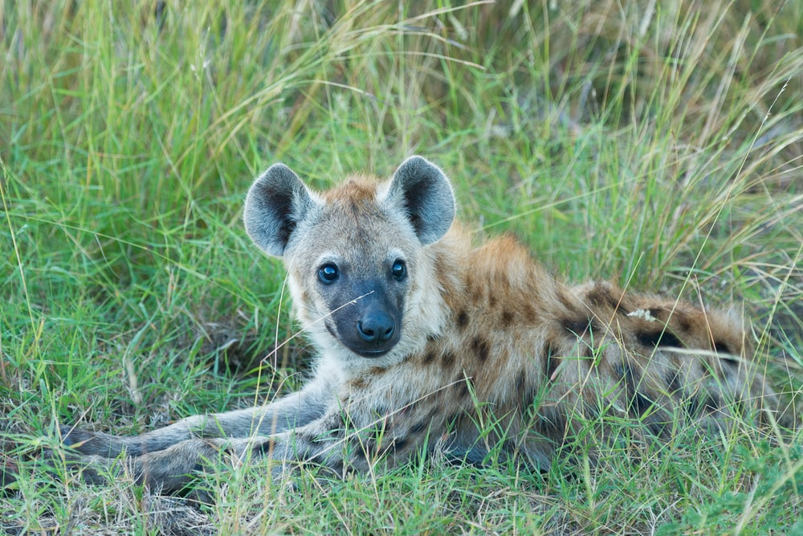

- 멋쟁이호랑이처럼
- 멋쟁이백호처럼
- 멋쟁이하이에나처럼
멋쟁이하이에나처럼
하이에나에 대해 궁금하다면? 눌러보세요

Hyena, 영어 발음은 "하이이너" [haɪˈiːnə]. 포유강 수아강 진수하강 로라시아상목 식육목 고양이아목 하이에나과의 동물...이지만 과거에는 늑대와 비슷한 외모 때문에 '개과'로 분류되었던 적이 있었는데, 사실 '사향고양이과에 더 가깝다'고 보는 의견이 대세이며, 그쪽에 분류된 적도 있었으나, 이게 생긴 모습도 그렇고 라이프 스타일도 사향고양이과보다는 차라리 개과나 다름이 없기 때문에 따로 '하이에나과'에 속하게 된 모양이다. 수렴 진화의 매우 좋은 예시로, 늑대와는 생김새뿐 아니라 뛰어난 지구력, 사회성과 그에 따른 높은 지능, 앞발은 잘 사용하지 못하는 대신 매우 발달한 치악력 등도 매우 닮아 있다.
라이온 킹의 영향으로 평상시에는 이히히히히히히힠하고 상대를 위협할 때에는 개처럼 짖는 것으로 알려졌지만, 이 특유의 웃음소리는 점박이하이에나의 울음소리. 상대를 위협할 때에도 그냥 으르렁거리지 짖지는 않는다. 줄무늬하이에나는 끄애애애애애애앩하는, 말로 표현할 수 없는 기괴한 울음소리를 낸다. 그래서 옛날에는 사람들이 하이에나의 울음소리를 '악마의 웃음소리'로 비유했다고 한다.[1]